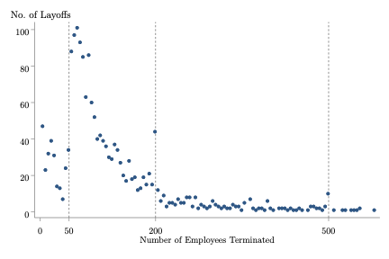
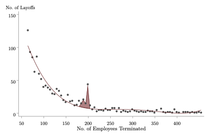

Selected Works in Progress


This paper investigates the impact of advance notice requirements on firm behavior during large-scale workforce reductions. We exploit discontinuous policy rules in the Employment Standards Act (ESA) to estimate the cost of additional notice requirements for firms conducting mass terminations in Ontario, Canada. Our novel empirical evidence shows that firms strategically manipulate the scale of layoffs to circumvent additional notice obligations. Specifically, we utilize quasi-experimental variation in notice requirements facilitated by the ESA to estimate an approximate 30% increase in the frequency of layoff events that bunch just below the threshold at which the mandatory notice period discontinuously increases from 8 to 12 weeks. These discrete jumps in mandatory notice reveal that the costs associated with additional notice provisions for displaced workers significantly distort firms' termination behavior during mass layoffs.